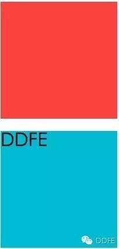
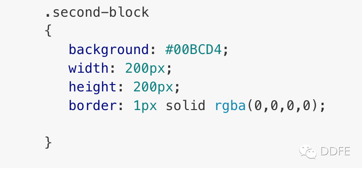
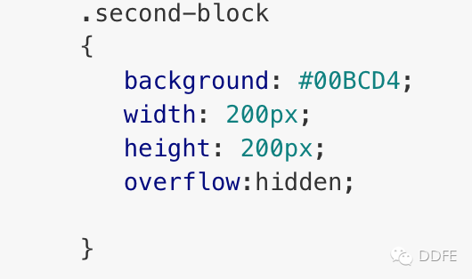
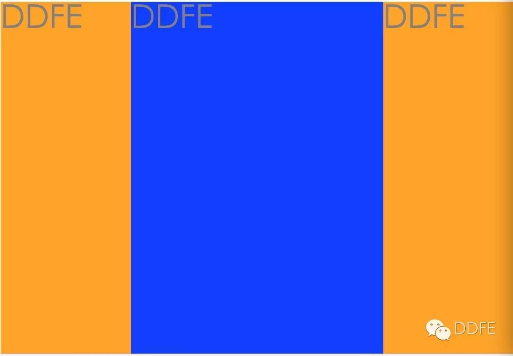
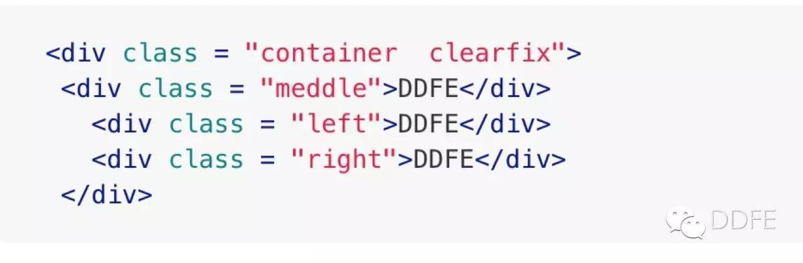
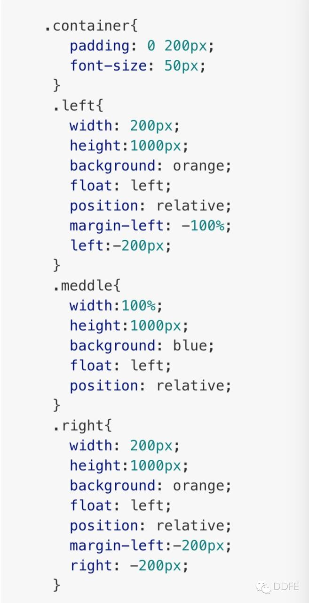
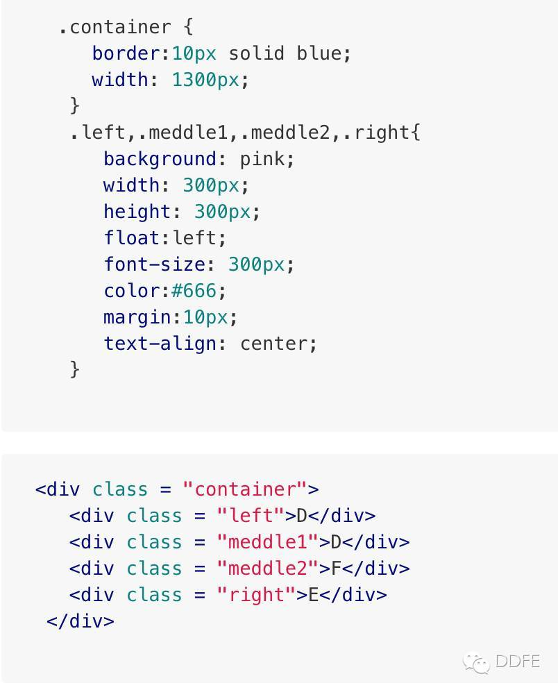
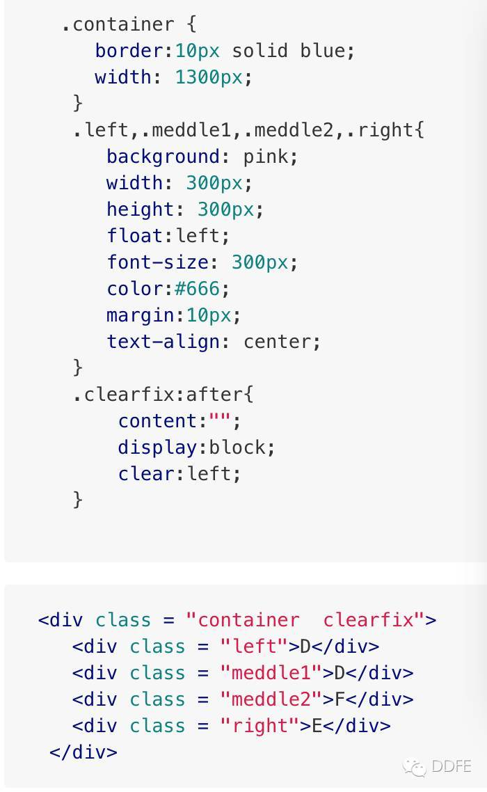

什么是BFC
- BFC(Block formatting context)直译为”块级格式化上下文”。它是一个独立的渲染区域，只有Block-level box参与， 它规定了内部的Block-level Box如何布局，并且与这个区域外部毫不相干。
BFC 的特征
- 内部的Box会在垂直方向，一个接一个地放置。
- Box垂直方向的距离由margin决定。属于同一个BFC的两个相邻Box的margin会发生重叠
- 每个元素的margin box的左边， 与包含块border box的左边相接触(对于从左往右的格式化，否则相反)。即使存在浮动也是如此。
- BFC的区域不会与float box重叠。
- BFC就是页面上的一个隔离的独立容器，容器里面的子元素不会影响到外面的元素。反之也如此。
- 计算BFC的高度时，浮动元素也参与计算
如何触发 BFC
满足下列条件中至少一项，即可触发 BFC：
- float 的值不为none。
- position 的值不为static或者relative。
- display的值为 table-cell, table-caption, inline-block, flex, 或者 inline-flex中的其中一个。
- overflow的值不为visible。
BFC 的应用场景
解决 margin 叠加问题
1 | <div class="first-block"></div> |
效果如下

为什么 first-block 和 second-block 之间会有这么宽的间距？
原因是：外边距折叠，这个间距是 h2 的上外边距引起的。
CSS 里面关于折叠的条件：
两个块元素要产生折叠现象，必须满足一个必备条件：这两个元素的 margin 必须是 相邻 的；那么如果定义相邻呢，w3c 规范，两个 margin 是邻接的必须满足以下条件：
- 必须是处于常规文档流（非float和绝对定位）的块级盒子,并且处于同一个 BFC 当中。
- 没有inline盒子，没有空隙，没有 padding 和 border 将他们分隔开。
- 都属于垂直方向上相邻的外边距，可以是下面任意一种情况：
那么我们就可以通过给元素叫边框或者边距来解决啦
解决办法 1：

折叠问题解决了，但是由于有1px的边框，second-block 看起来会比 first-block 宽一点，没关系，添加 box-sizing: border-box 属性可以解决这个问题：再加一句：box-sizing:border-box ;
解决办法 2：

通过把 overflow 把 second-block 元素形成一个 BFC，完美解决！
用于布局
- 三列布局，中间宽度自适应，两边定宽，这样做的优势是重要的东西放在文档流前面可以优先渲染。

html部分：

css部分：

- html代码中，middle部分首先要放在container的最前部分，然后是left，right 。
- 将三者都设置
float:left,position:relative。 - middle设置
width:100%占满一行 。 - 此时middle占满一行，所以要把left拉到middle所在行的最左边，使用
margin-left:-100%。 - 这时left拉回到middle所在行的最左边，但会覆盖middle内容的左端，要把middle内容拉出来，所以在外围container加上
padding:0 200px。 - middle内容拉出来了，但left也跟着出来了，所以要还原，就对left使用相对定位
left:-200px。 - 同理，right要拉到middle所在行的最右边，使用
margin-left:-200px，right:-200px。
用于清除浮动，计算BFC高度

我们想象中应该是这样的：
但实际是却是这样的：
div 标签没有包住 ul 标签，原因很简单：container 下的子元素浮动了，因此div的高度就塌陷了。
要解决塌陷，就得清除浮动。
清除浮动就两种方式：
1)利用 clear 属性清除浮动。

2)使父容器形成 BFC。
给父元素 .container 加一句 overflow:hidden 触发 bfc。